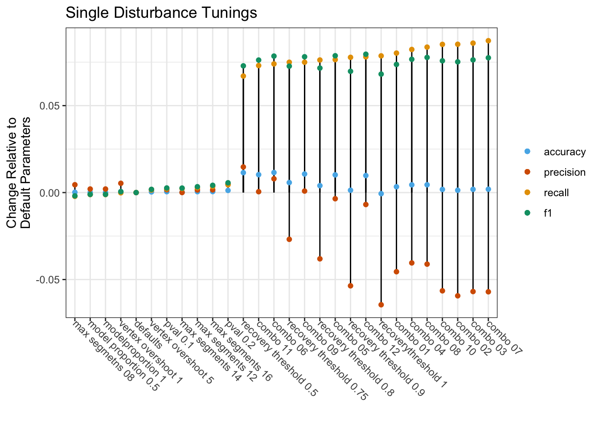
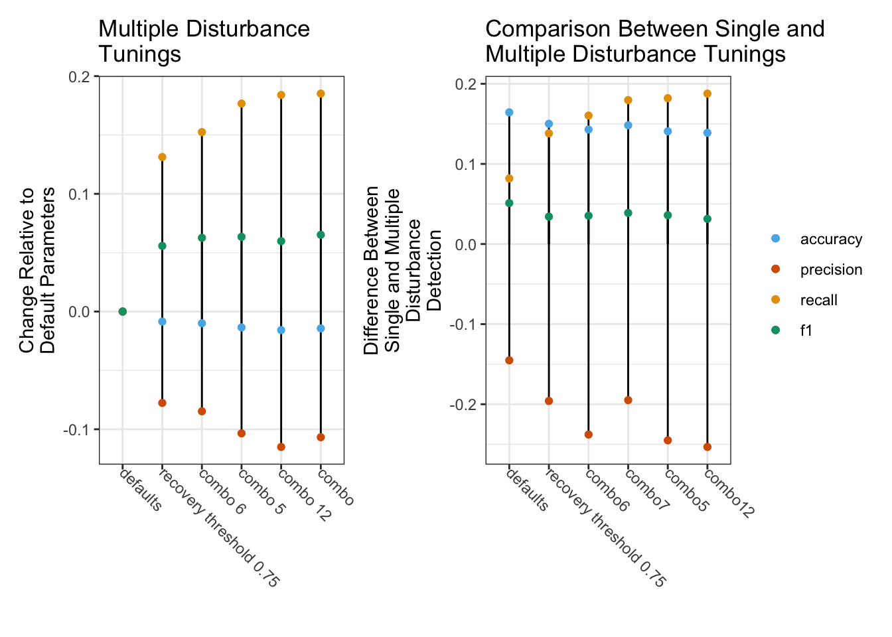

| parameter | values tested |
|---|---|
| max segments | 8, 10, 12, 14, 16 |
| vertex count overshoot | 1, 3, 5 |
| recovery threshold | 0.25, 0.5, 0.75, 0.8, 0.9, 1 |
| p value threshold | 0.05, 0.1, 0.2 |
| best model proportion | 0.5, 0.75, 1 |
Tuning
To improve the performance of the LandTrendr algorithm in the Northern Forest Region we leveraged a dataset of forest harvest records to create several parameter combinations, or tuning, that can be used specifically for the detection of harvest disturbances in the Northern Forest region. Tuning was conducted in two phases - initial parameter testing against single disturbance map outputs, and a second phase of tuning that tested performance against all detected disturbances. This is an overview of the methods used in this project (adapted from Desrochers 2024).
Methods
Initial Tuning
The intial tuning was intended to learn the effects of different parameters on algorithm outputs. Here we tested 28 different LandTrendr outputs and evaluated the performance of the tunings using four metrics: precision, recall, F1 score, and overall accuracy. The method of assessment was taken from Desrochers et al. (2022) where we looked for pixel-level match within a +/- 1 year period around the timing of harvest. Pixel states were assigned, tallied, and used to calculate performance metrics. A pixel where LandTrendr and the reference data agreed about a disturbance was a true positive (TP); a pixel where they both agreed about the lack of a disturbance was a true negative (TN). Disagreement was either a false negative (FN) in the case where the algorithm failed to detect a recorded disturbance, or a false positive (FP) in the case of disturbances detected where the reference data did not indicate that one had occurred.
The selected algorithm parameters for tuning included: max segments, vertex count overshoot, recovery threshold, p-value threshold, and best model proportion. These parameters were selected based on fitting suggestions in Kennedy et al. (2010). Other parameters were held constant at default values. We initially tested each parameter individually, only altering the value of one parameter at a time (Table 1). Once we had determined which parameter values were most effective at increasing algorithm accuracy on their own, we tested combinations of high performing parameters (Table 2).
| parameter combination | max segments | vertex count overshoot | recovery threshold | p value threshold | best model proportion |
|---|---|---|---|---|---|
| 1 | 12 | 1 | 0.75 | 0.10 | 0.75 |
| 2 | 16 | 1 | 0.75 | 0.10 | 0.75 |
| 3 | 16 | 5 | 0.75 | 0.10 | 0.75 |
| 4 | 12 | 5 | 0.75 | 0.10 | 0.75 |
| 5 | 16 | 5 | 0.50 | 0.10 | 0.75 |
| 6 | 12 | 5 | 0.50 | 0.10 | 0.75 |
| 7 | 16 | 5 | 0.75 | 0.20 | 0.75 |
| 8 | 12 | 5 | 0.75 | 0.20 | 0.75 |
| 9 | 16 | 5 | 0.50 | 0.05 | 0.75 |
| 10 | 16 | 1 | 0.75 | 0.05 | 0.75 |
| 11 | 12 | 1 | 0.50 | 0.10 | 0.75 |
| 12 | 16 | 1 | 0.50 | 0.10 | 0.75 |
Second Round
The combinations of algorithm parameters with the highest performance in this initial stage of tuning were carried over to the second stage of tuning and tested against all detected disturbances. A typical change map output produced by the Landtrendr algorihtm can identify at most one disturbance per pixel, however, it is possible, or even likely given a long enough time period, that a given pixel would have multiple disturbances over a given study period. To assess more complex disturbance outputs we utilized two additional LandTrendr outputs: 1) the vertices identified by the LT algorithm, and 2) the smoothed spectral trajectory fit to those vertices. Using these output layers, we extracted all pixels that had vertices associated with a decrease in spectral reflectance value. This approach was more inclusive of all possible disturbances, such that multiple disturbances could be identified at the pixel level. The output of this approach was a raster stack with one layer for each year in the study period, hereafter referred to as the ‘losses’ output.
This format, while useful, introduced some challenges for accuracy assessment. Assessing accuracy on a year-by-year basis was fairly straightforward as once we had created the losses output, it could be matched to the harvest records from that year in a manner similar to the method used in the initial tuning. However, those yearly accuracy values could not simply be summed to represent overall accuracy, as this would have overcounted the FN values within the harvested area, inflating that metric and overall negatively biasing the evaluation of algorithm performance. To illustrate this situation, consider a harvest that is 3×3 pixels (9 pixels total) and takes place over a single year in 2017. In our protocol, all harvests were given a +/- 1 year temporal buffer to account for detection lag and winter harvesting, which means that we considered disturbances in 2016, 2017 and 2018 for our sample harvest. If over those three years we observe in LandTrendr outputs a total of six TP pixels (e.g., one in 2016, two in 2017 and three in 2018) out of nine pixels, this may seem like good performance. However, this does not account for the FN pixels, which in this case would equal 21 (more than 3 times the TP count). A similar issue occurs outside the harvest polygons (but within the tract boundaries) with the TN class. Across all the harvests, this issue creates a bias that inflates the negative classes (FN and TN) and makes it difficult to reliably assess the accuracy of algorithm outputs. To address this issue, we developed a new method that separately handles the area inside and outside of harvest polygons. The area within the harvest polygons was assessed first. To avoid overcounting FN, we assessed the two-pixel states relevant to harvest areas (TP and FN) on an individual harvest basis. For each harvest we extracted the layers corresponding to the years of harvest (plus the buffer years) from the losses output and counted the number of detected disturbances present within the boundary of the harvest; this number represents the number of TP for this harvest. The number of FN pixels was calculated by subtracting the number of TP from the total number of cells contained within the harvest boundaries. By this method we are taking an “overhead view” of the harvest and allowing all positively identified disturbance pixels to show through, which eliminates the overcounting of FN. Because the outcome of this method is a value that is equivalent to only the total number of pixels in one year within the harvest polygon, the values were multiplied by the number of years of harvest (plus buffer years) so that they would match more closely with outputs for the area outside of the polygons. The TP and FN counts from all harvest polygons were then summed to provide total values for the study period. The area within the tract boundaries, but outside the harvest polygons was assessed on a yearly basis. Each year in the losses output was masked to remove the areas that were harvested that year. Because this remaining area by definition has no recorded harvests, FP counts can be determined by counting all disturbance pixels in each layer. After this step, TN counts were calculated by subtracting the number of FP from the total number of pixels in the layer, and then FP and TN counts can be summed across all years in the study period to give a total value. As before, we used precision, recall, accuracy and F1 score as performance metrics for comparing LandTrendr tuning outputs.
Results
| short_name | Precision | Recall | F1 | Accuracy |
|---|---|---|---|---|
| recovery threshold 0.75 | 0.6402340 | 0.2963899 | 0.4051976 | 0.7795723 |
| defaults | 0.6671112 | 0.2214444 | 0.3325127 | 0.7738120 |
| max segmetns 08 | 0.6716189 | 0.2192798 | 0.3306155 | 0.7739956 |
| max segments 12 | 0.6686132 | 0.2242831 | 0.3358926 | 0.7743272 |
| vertex overshoot 1 | 0.6724434 | 0.2213153 | 0.3330250 | 0.7744001 |
| vertex overshoot 5 | 0.6688639 | 0.2228852 | 0.3343538 | 0.7741833 |
| recovery threshold 0.5 | 0.6818447 | 0.2884402 | 0.4053890 | 0.7852595 |
| pval 0.1 | 0.6687672 | 0.2236114 | 0.3351581 | 0.7743272 |
| pval 0.2 | 0.6719916 | 0.2259091 | 0.3381421 | 0.7750529 |
| modelproportion 1 | 0.6691561 | 0.2202954 | 0.3314672 | 0.7738704 |
| model proportion 0.5 | 0.6691561 | 0.2202954 | 0.3314672 | 0.7738704 |
| max segments 16 | 0.6686719 | 0.2249838 | 0.3366853 | 0.7743876 |
| max segments 14 | 0.6671310 | 0.2237440 | 0.3351010 | 0.7740706 |
| recovery threshold 0.8 | 0.6290196 | 0.2976814 | 0.4041162 | 0.7777933 |
| recovery threshold 0.9 | 0.6134995 | 0.2992147 | 0.4022466 | 0.7751551 |
| recoverythreshold 1 | 0.6026096 | 0.3000611 | 0.4006327 | 0.7731905 |
| combo 01 | 0.6216088 | 0.3016484 | 0.4061864 | 0.7771572 |
| combo 02 | 0.6077542 | 0.3067283 | 0.4076959 | 0.7751593 |
| combo 03 | 0.6102023 | 0.3073630 | 0.4088071 | 0.7756723 |
| combo 04 | 0.6266683 | 0.3037326 | 0.4091561 | 0.7782667 |
| combo 05 | 0.6635782 | 0.2978939 | 0.4111942 | 0.7839852 |
| combo 06 | 0.6750508 | 0.2954267 | 0.4109895 | 0.7853387 |
| combo 07 | 0.6100671 | 0.3087742 | 0.4100229 | 0.7757411 |
| combo 08 | 0.6259651 | 0.3050847 | 0.4102302 | 0.7782959 |
| combo 10 | 0.6106240 | 0.3066615 | 0.4082804 | 0.7756181 |
| combo 09 | 0.6679905 | 0.2964055 | 0.4106115 | 0.7845004 |
| combo 11 | 0.6676184 | 0.2945002 | 0.4087100 | 0.7841208 |
| combo 12 | 0.6602451 | 0.2994984 | 0.4120733 | 0.7836015 |
Figure 1. Comparison of accuracy assessment metrics for algorithm tunings.


Recomended Tunings
Through this tuning process we found the recovery threshold, max segments, the p-value threshold parameters to be the most important for improving the detection of harvest disturbances in the Northern Forest Region. In selecting the ‘best’ tuning, we looked for parameter combinations that maximized F1 and recall, while minimizing the decrease in precision (Figure 1) . The parameter set that yielded best overall improvement of performance metrics was ‘combination 6’. This group of parameters yielded outputs with the highest overall accuracy and third-highest F1 score, while maintaining relatively high precision (Table 3). Other parameter combinations could be selected to maximize specific metrics, as follows: combination 12 for F1, recovery threshold 0.5 for precision, combination 7 for recall.